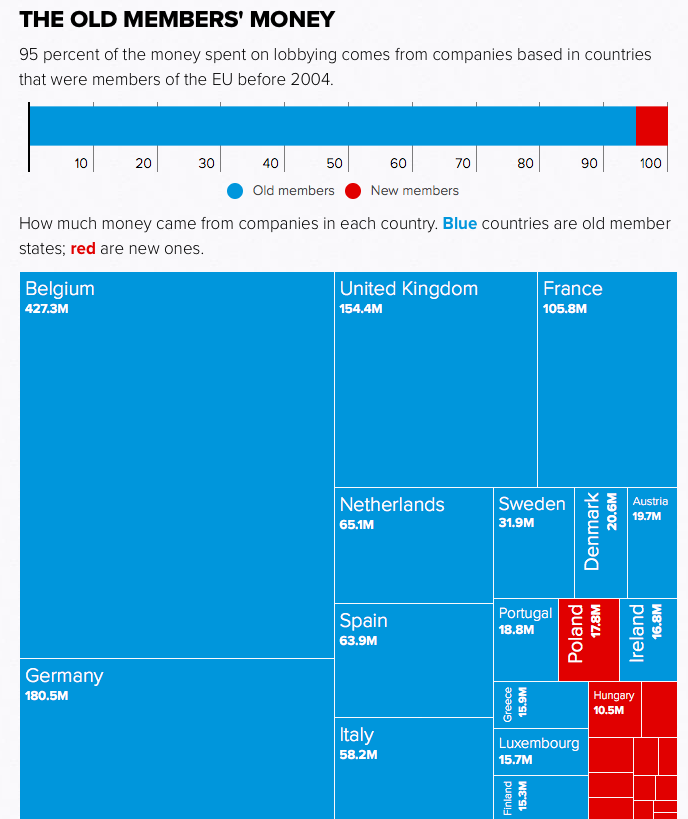
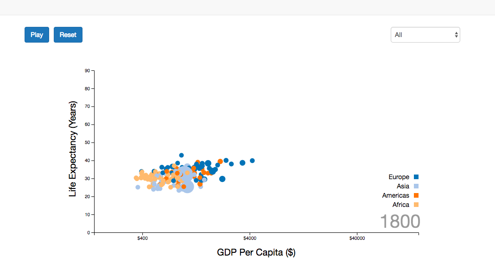

Hi, I'm Ioannis Antypas.
Brussels based data journalist and data visualizer who recently finished the Lede Program, at Columbia Journalism School.
I work with the data team of the Deutsche Welle to produce exciting data driven stories!
Also I am a correspondent at the European Institutions for the leading Greek newspaper Proto Thema.
I love coding, journalism, and coffee, perhaps a bit too much.
Do you have an idea for a data driven story? Great! I am elated to work on interesting data stories! Reach me by email or PGP
-
DEUTSCHE WELLE - Investigating lobbying from non European Union actors in Brussels
Tools: Python, web scraping
November 12, 2018
-
DEUTSCHE WELLE - Analyzing the prospects of the Greek economy
Tools: Python, web scraping, pdf processing
August 19, 2018
-
Remodeling text intensive EU websites with more charts!
Tools: Python, d3.js, web scraping, pdf processing
June 20, 2018
-
EURONEWS - Four ways to split the EU funds given to Turkey to manage migration!
Easy access to the interactive chart
Tools: Python, d3.js, web scraping, pdf processing
Mar 23, 2018
-

POLITICO - EU lobbying has never been bigger, and the divide between east and west is astonishing
Tools: Python, d3.js web scraping
Dec. 15, 2017
-

Interactive Visualization - Remaking the beautiful Gapminder population to GDP chart
Tools: d3.js
Mar. 5, 2018
-
Interactive Visualization - How have the Crypto-currencies performed over the years?
Tools: Python, d3.js web scraping
Feb. 20, 2018
-

Taxes in crisis striken Greece rise higher than any other EU country.
Tools: Python, web scraping, Adobe Illustrator
Nov. 10, 2017
-

The Gender Divide in Star Wars is ever narrowing!
Made with Julien Assouline
Tools: Python, d3.js, web scrapping, Adobe Illustrator
Oct. 25, 2017
-

It appears there is no room for sentimentality in the Eurogroup!
Tools: Python, Illustrator, Sentiment Analysis with Machine learning
Oct. 2, 2017
-
More persons than ever involved in British Financial Lobbying after Brexit
Tools: Python, Illustrator, Photoshop
Aug. 20, 2017
-

Analyzing the US vaccination in children, and preventable disease outbreak situation
Tools: Python, Illustrator
Aug. 12, 2017
-
Eurovision (yes that contest) is a playground of data!
Tools: Python, Web Scraping, mapping with Leaflet
Jul. 15, 2017